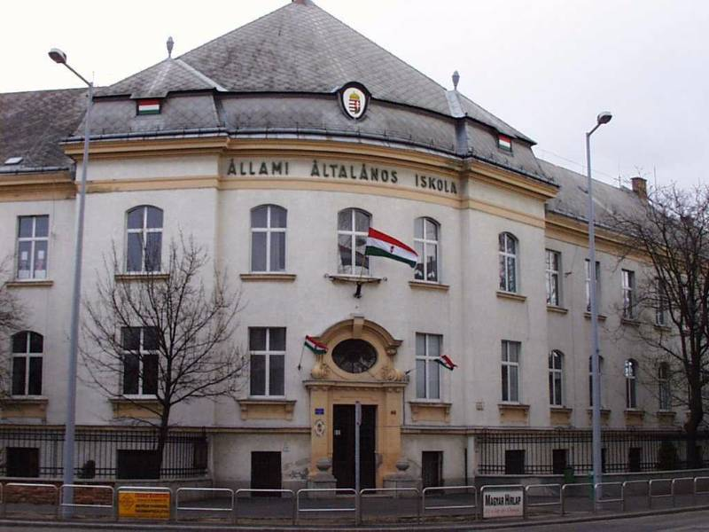
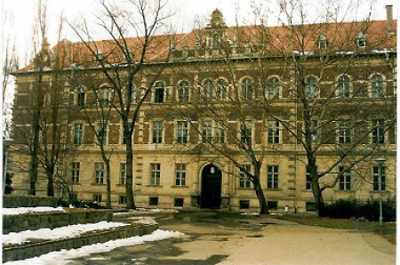
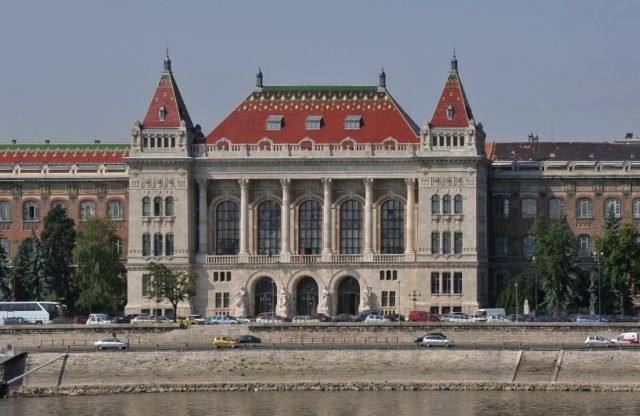
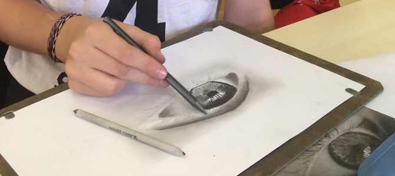
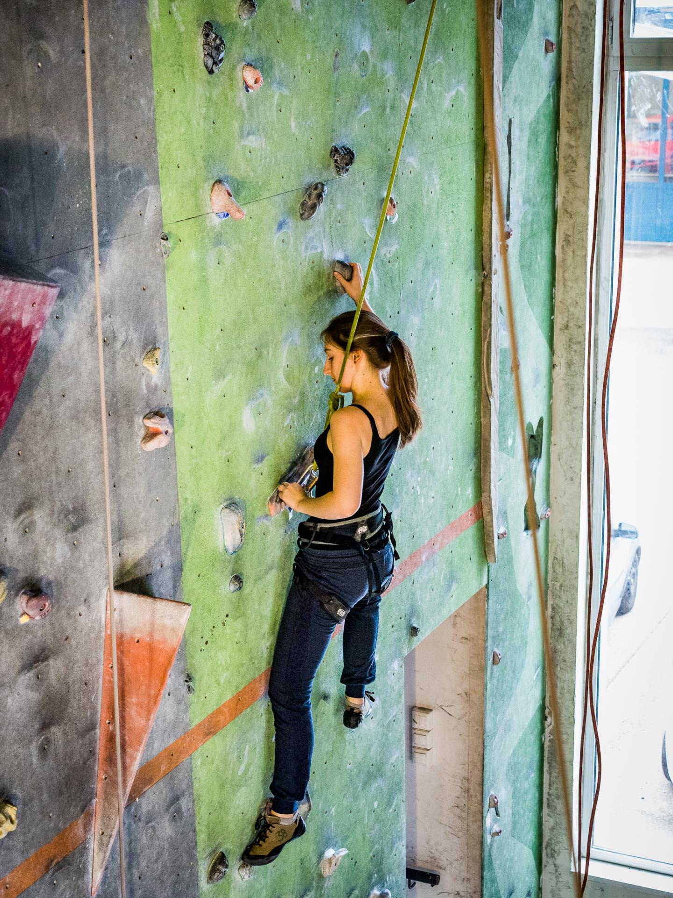
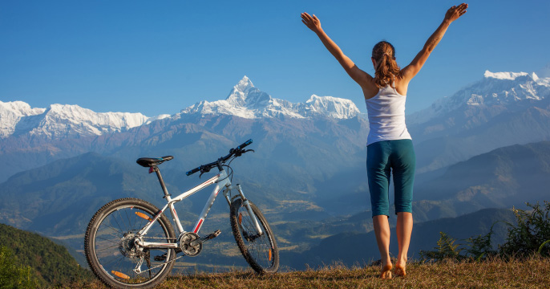
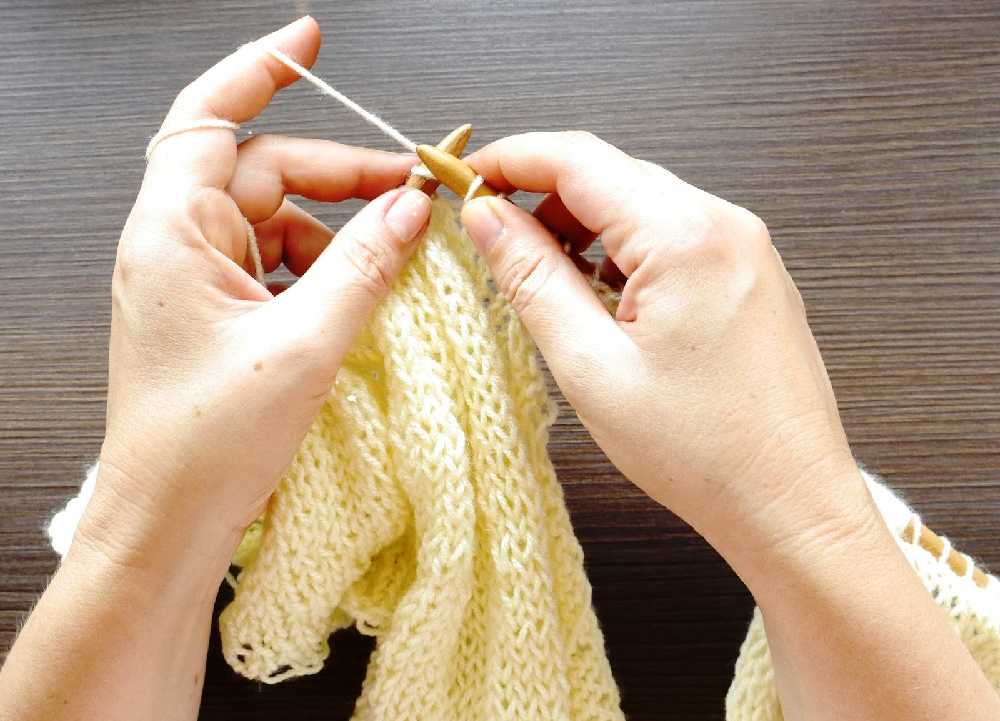

Papp Zsófia vagyok, 18 éves, 2000. december 18.-án születtem Győrött, itt is nevelkedtem fel. Szeretem a kreatív megoldásokat igénylő feladatokat és szívesen dolgozok csapatban.
Tanulmányok
Tanulmányaimat a győri Gárdonyi Géza Általános Iskolában kezdtem, a középiskolát a Révai Miklós Gimnáziumban és Kollégiumban végeztem szintén Győrben matematika-fizika orientáción. Még gimnazista éveim alatt tettem szert középfokú angol nyelvvizsgára, ekkor vettem részt az Országos Középiskolai Tanulmányi Versenyen is Vizuális kultúra kategóriában, ahol 20. helyen végeztem.
Jelenleg elsőéves hallgató vagyok a Budepesti Műszaki- és Gazdaságtudományi Egyetem Ipari termék- és formatervező szakán.



Munkahely
Középikolás diákéveim alatt minden nyáron dolgoztam takarítóként a Sziget- és VOLT fesztiválokon a Clean Code Kft.-nél. Egy kisebb (8 fős) csoport vezetőjeként volt lehetőségem betekinteni a vezetéssel járó felelősségekbe és sokat tanulhattam a csapatmunkáról.
Egyik nyáron segédkeztem egy egyhetes gyermektábor lebnyolításában Győrben az Esterházy-palotában, ahol a gyerekek balett- és képzőművészeti gyakorlaton vettek részt, valamint csoportos mesemondó és csapatjátékokat játszottak képzett művészek és tanárok koordinációja alatt.
Hobbim
Szabadidőmben szívesen vagyok a természetben, hegyetmászok vagy túrázok a családommal/barátaimmal, innen sokszor veszek ihletet későbbi rajzaimhoz és festményeimhez, melyekkel imádok időt tölteni. Különösen szeretem a dobozfestést, egyaránt papír és fadobozokra.
A sportot is hobbijaim közé sorolnám, 6 év versenyszerű atletizálás után már csak kedvtelésből futok, emellett szívesen teniszezek, teremben falmászok, biciklizek - barátnőimmel minden évben körbetekerjük a Balatont - és íjászkodok. Szeretek kötni, varrni és szívesen hímzek. Az olvasás is kedvelt időtöltéseim közé tartozik, leginkább történelmi, fantasy és sci-fi témájú kövnyveket választok.




Célok
Szeretném az Ipari termék- és formatervezői alapszak elvégzése után a mesterfokozatot is megszerezni, kijutni Erasmus programmal külföldre lehetőleg Észak-Európába és tökéletesíteni az angol nyelvtudásom, hogy letehessem a felsőfokú nyelvvizsgát is, valamint fejleszteni szeretném az orosztudásom.
Tervezek csatlakozni a BME Design Szakosztályához. Az egyetem elvégzése után szívesen dolgoznék az autó- vagy bútoriparban egyaránt, közép- vagy nagyvállalkozásnál elhelyezkedve.